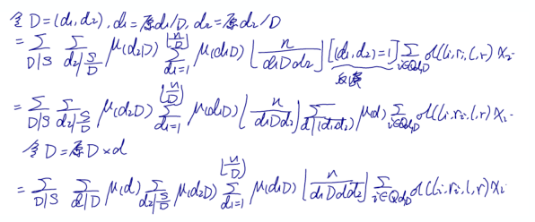

Day -1
WC前在机房待的最后一天了
不搓会osu怎么行呢
于是愉快地上了2100pp
成都最近好像有个什么中日韩的峰会，因此第二天需要特别早到机场
没管面试，晚上很早就睡了
Day 0
7点半的飞机，我5点起的床
有几位神仙在前几天就去北大参加精英集训了，听说前几天北京一直在下雪
大概10点的时候终于到了北京，天气很晴朗，路上的积雪都化得差不多了
入住的时候发现这次订的酒店在SC的酒店的对面
中午一起出去到酒店旁边恰了顿饭，于是愉快地搓了会malody
下午报道前排了好长的队，顺便%了一波zjc学长
这次表格里面竟然有“是否能使用linux”这一项，作为linux菜鸡我果断填了否（然而卢爷填了“是”）
试机咕掉了，晚上继续颓malody
Day 1
开幕式似乎没啥好说的，就是结束之后又去酒店补了一波觉
SC的时候我们就已经体会到北大各大食堂之间深刻的差异，似乎网球场那边的食堂只卖面包
大概12:40到了机房，发现自己的位置是靠窗第一排？
没怎么敲模板（好像我也没啥好敲的），登录账号之后熟悉了一下键盘，发现Fn这个键的位置非常毒瘤
先看了下T1，感觉没什么思路，但是1 2 3 1 3 2 / 2 1 3 2 3 1 / 3 1 2 3 2 1这三段本质上来说似乎只是交换了一下矩阵的行列？
但是我的做法需要在$n!$个地方插入一个新的数，非常没救
刚了一个多小时之后决定先敲21分的暴力
忽然想起好早以前似乎在CF上做过一道很像的题，好像也是把排列拼在一起，但是题意记不太清了
然后复杂度好像是$O(n)$？而且代码特别短
事后证明我果然记错了
完了，T1不会，感觉心态有点炸裂
T2是一道998244353，但式子似乎比较良心？
一开始我把题意理解错了，以为是合并成一棵树型的结构，然后发现第二个样例过不去
仔细观察后发现好像是合并两个集合
我把自己的$n^3$随便改了改，然后就过掉了第二个样例，交上去之后只拿了$n\leq 7,n\leq 100$这两档分
至少式子没推错。然后这个$n^3$貌似是可以优化到$n^2$的？
似乎只需要预处理$A_t=\sum\limits_{j-i=t}(a[j]-a[i])^2$以及一个组合数就可以了？
然后我愉快地拿到了$n^2$这一档分
又仔细观察了一波之后发现这个似乎可以再NTT优化？但是要NTT三遍，而且第三遍的式子有点难推
冷静一下，先敲完了$l=1,n-1$这两档分数少的可怜的部分分，然后开始看T3，打算最后再来NTT
我在T3上似乎只花了30分钟时间，敲完前两个$n^2$暴力以及$m=1$的sb莫反就跑路了
此时离比赛结束还剩半个小时，然而我还没开始写NTT……
然后抱着试一试的心态果断敲出了4kb代码，最后一个NTT我放弃了，只敲了前两个，复杂度是$n\log n+(r-l+1)n$
在最后五分钟的时候 过 了 样 例 ！
果断提交，发现拿了62分。嗯？我$l=r=1$的点RE了？
检查之后发现sb的我return了printf的返回值，时间不够了，直接复制了我之前写过的特判代码
最后得分21 + 63 + 43 = 127？成功获得大众分
怎么泥萌都会T1啊
晚上听说第二天面试有英语自我介绍？慌得一批
赶紧补稿子，然后发现google翻译比自己翻译的好一万倍
Day 2
早上面试，复习了一下稿子之后感觉 大 概 没有问题了（吧）
前两个老师都先让我自我介绍，没有要求英文，良心！
第一个老师问我怎么接触OI的，以及一个很恐怖的送命题“北大计算机系与清华计算机系的区别是什么”。第二个老师问我昨天/CSP考得如何以及我的文化课怎么样
第三个老师问了我之前的比赛情况之后就让我提问了
听说有个老师10：20的时候才面到9：20的学生？
不管了，滚回酒店睡觉
12：40准时到机房，找座位找了好久，最后发现是在最左边那个教室的一个角落里，而且我左边没人（雾）
感觉Day2会比Day1毒得多（事实证明并不是
T1神TM打铁传说，发现$n^2$是送的，赶紧写
然后这大概是一个匹配的问题？然后要写线段树维护单调栈？
我越想感觉越毒瘤，然后在40min的时候发现自己sb了，直接扫一遍预处理出匹配就可以了
代码长度700B，终于有一道能让我签到的题了
T2看起来一脸不可做，仔细思考后发现每个数要么乘要么除，而且好像只与到$l$的单调栈元素个数有关？
如果每个数向它左边第一个比它大的数连边，那么此时每个数的单调栈元素个数等价于只考虑下标在$[l,n]$之间的这些节点时的深度
然后我马上就写了65那一档，就是更新的时候暴力dfs子树，然后复杂度貌似很优秀
这似乎是一个二维偏序，但是我不想写树套树
冷静一下之后发现一棵子树内对应的下标也是连续的，因此这个二维偏序本质上还是一个一维的东西，直接上线段树就好了
代码出人意料得好写，我一遍过了样例
顺便发现，暴力dfs在随机那一档分的表现比正解优秀233
根据SC“线弦图”的经验，我觉得吉老师会在T3放一道毒瘤题
赶紧写了19分暴力，这个时候离比赛结束还有两个小时，反正闲着也是闲着，还不如想一想T3
很快我发现似乎不用跑最大流，首先环上有两条边是必须要割的，然后枚举这两条割的边。于是只需要维护一个数据结构，支持矩阵取min？
我将自己的19分暴力改成了差分，发现$n=300$跑了3.5s
果断将multiset改成带删除的优先队列，瞬间快了一倍
在考试快结束的时候码了一个四分树，一开始update要传10个参数然后被无情卡T了，一气之下将10个参数压成5个，然后快了2/3
所以最后100 + 100 + 68 = 268，听说本校zyw神仙两个半小时就AK离场了
完了，听说人均300
晚上继续颓malody
Day 3
闭营仪式感觉还行，可惜吉老师咕咕咕了
似乎讲到D1T3的时候全场都在笑

然后就是发约了，又是那两张熟悉的桌子，如愿拿了一等
orz本校初二神仙cjz一等
最后395，比CSP高得多，还是不虚此行吧